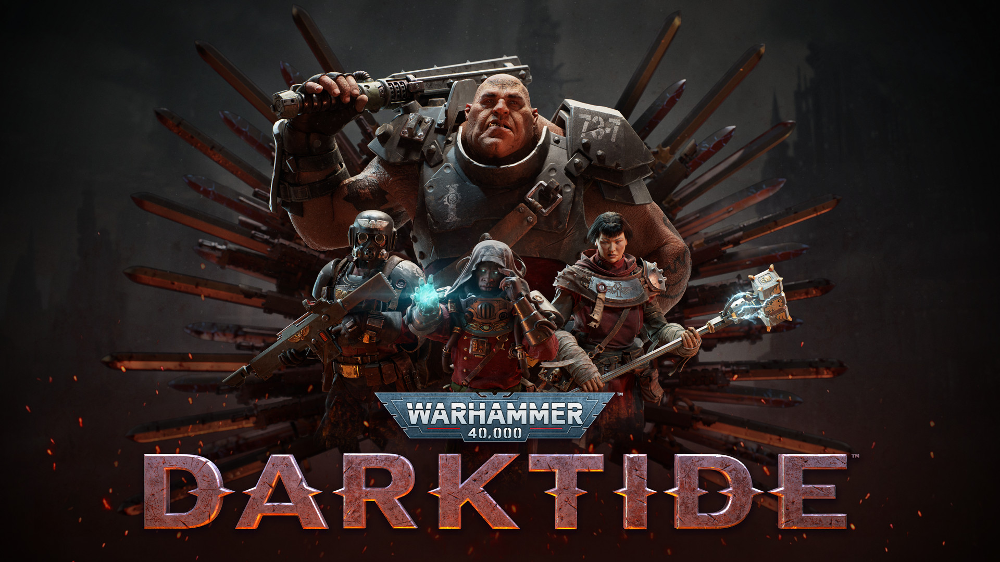
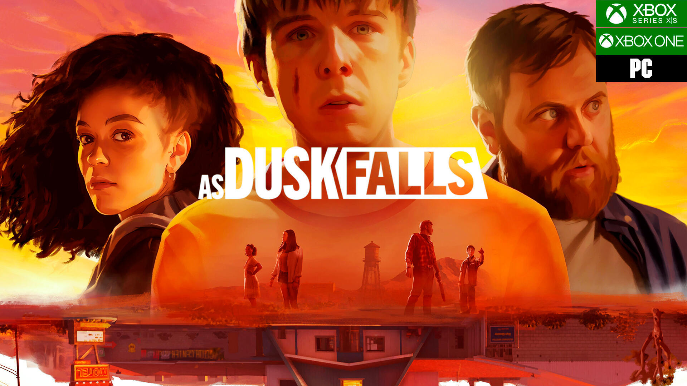
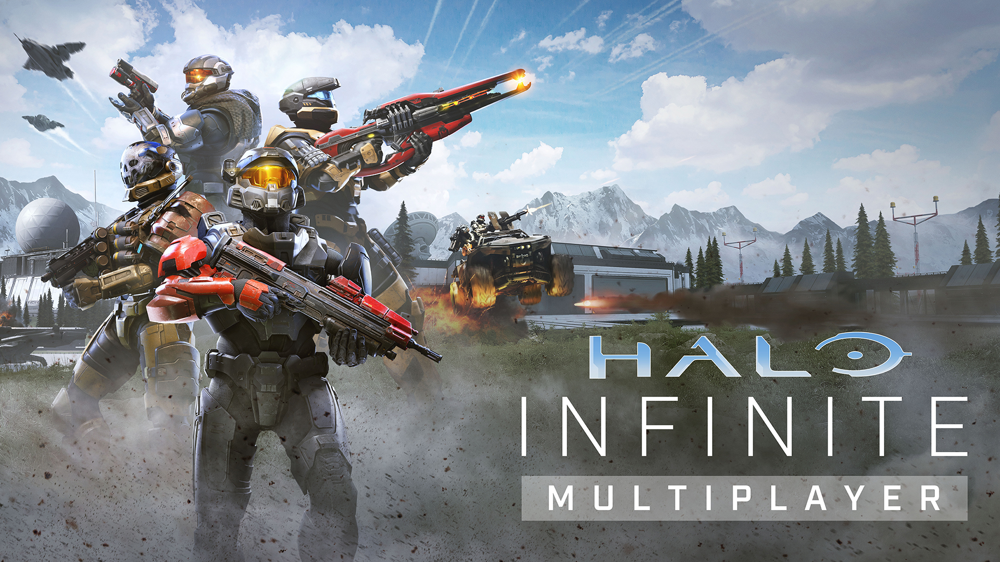
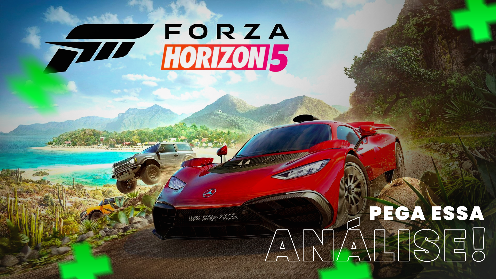

TOP 5 JOGOS XBOX
1. Warhammer 40K: Darktide
Warhammer 40K come pessoas. Não quero dizer que isso consumirá sua vida ou que sua casa será tomada por incontáveis modelos que você não tem tempo de pintar - embora ambas as coisas sejam verdadeiras. Não, quero dizer que o cenário em si é alimentado por cadáveres - sejam os soldados da Astra Militarum morrendo em cruzadas sem fim, os funcionários do Administratum labutando suas vidas em documentos antigos ou mesmo os criminosos envoltos em máquinas e forçados a uma sentença permanente. É uma verdade que Warhammer 40K: Darktide entende; seja você ou o Poxwalker que você está prestes a partir ao meio, vocês dois são apenas carne no exército de algum deus. Em uma vida não tão diferente, aquele servidor médico, cuidando dos feridos enquanto permanentemente envolto em máquinas, poderia ter seu rosto em vez disso. Dito claramente, é péssimo ser um humano - ou um ogryn - em 40K. Você provavelmente disse a algum sargento que estava cansado de comer goma de cadáver, e agora está aqui, um prisioneiro da Inquisição, enviado para libertar a Colmeia Tertium com uma pá e uma velha arma laser; queimar sua vida no altar de um deus mudo.
Longa história curta Primeiro, é importante reconhecer como Darktide é diferente de Vermintide. O jogo representa uma mudança na narrativa de Fatshark - onde Vermintide 2 retratava as façanhas passadas dos cinco Ubersreik, em Darktide você faz parte de uma narrativa em desenvolvimento. Este é o primeiro jogo de Fatshark com uma história no estilo de serviço ao vivo no lançamento, e mudará conforme a situação no Hive Tertium se desenrolar. O autor da Biblioteca Negra, Dan Abnett, que ajudou Fatshark a criar Tertium e Atoma Prime, os descreve como "um local para coisas interessantes". O cenário é construído para dar suporte a uma história em andamento, então se você está otimista sobre a possibilidade de novas classes e inimigos, acho que há uma grande probabilidade de vê-los.
link para comprar Warhammer 40K: Darktide2. As Dusk Falls
À primeira vista, Two Rock, Arizona é apenas uma cidade atrasada ocupada por pouco mais do que bolas de feno e algumas fileiras de casas. Entretanto, muito pouco é o que parece pela primeira vez e tudo o que é preciso para revelar as muitas camadas de profundidade narrativa de As Dusk Falls é uma pequena tragédia de décadas. Tudo é sobre a história, já que esta é uma graphic novel, no estilo de escolha sua própria aventura, que habilmente extrai ideias de jogos como a série The Walking Dead da Telltale e 13 Sentinels: Aegis Rim. Cada membro desse elenco de dublagem de personagens únicos e interessantes tem seus próprios interesses emocionais, muitas vezes conflitantes, que aceleram a história em centenas de direções lógicas e inteligentemente conectadas. Através das consequências poderosas e muitas vezes de longo alcance de suas próprias ações, esta pequena cidade é gradualmente revelada como um barril de pólvora cheio de segredos, vícios e laços familiares que são muito mais profundos do que qualquer estranho é inicialmente levado a esperar. Esta história começa com um assalto realizado por um trio de irmãos que, enquanto procuram um lugar para se esconder, colidem com outra família no auspicioso Desert Dream Motel. Você inicialmente alterna entre o irmão mais novo de fala mansa, Jay, e Vince, um pai casado que pode se importar mais com sua história profissional conturbada ou com sua família – a depender de como você escolhe interpretá-lo. A dublagem conta com bastante competência e apresenta nomes familiares como Elias Toufexis de Deus Ex e Jane Perry de Returnal, só para citar alguns, onde cada personagem é interpretado com convicção crível. Para um jogo com tanto melodrama, muito pouco é jogado de forma desajeitada, e isso é um enorme positivo.
Esses personagens e suas motivações podem variar muito dependendo da ordem das ações que você escolher, como confrontar um assaltante com uma espingarda ou tentar argumentar com ele. Todo mundo tem sua própria visão sobre Two Rock e sua história, e se o enredo começa a pintar um personagem não-jogador como um vilão, as coisas raramente permanecem assim por muito tempo. O cabo de guerra moral é constante aqui e você pode querer jogar a campanha de seis horas várias vezes; não porque você precisa, mas porque seguir caminhos diferentes e explorar essas histórias totalmente diferentes é muito gratificante. É ótimo que As Dusk Falls aponte quais decisões são as grandes com uma sobrecarga de sinal gigante, mas não apenas assuma que aescolha mais óbvia sempre terá o resultado desejado. Esses eventos em cascata são uma fonte constante de reviravoltas, o quesignifica que as coisas podem sair do controle de maneiras que você normalmente não pretendia e praticamente nenhum membro do elencoprincipal está seguro. Também é fácil voltar para uma decisão que não foi do seu jeito se você for exigente sobre como deseja queuma jogada seja. A probabilidade de você conseguir ver tudo de significativo na primeira gameplay é quase zero, e a disponibilidade de um modo de atéoito jogadores, onde todos podem votar nas decisões, torna As Dusk Falls muito mais um jogo de festa do que qualquer outro romancevisual até hoje. As pessoas podem até votar usando seus telefones. Nas circunstâncias certas e com o grupo certo de pessoas, poderiaser uma das novelas visuais mais reproduzíveis até hoje.
link para comprar As Dusk Falls3. Gears 5
Foram necessários cinco games e mais um spin-off para que a franquia Gears of War apresentasse alterações importantes em seu gameplay. O combate intenso baseado em cobertura e muitos tiros continua bem vivo, mas Gears 5 teve a adição de elementos cooperativos ainda mais influentes como, por exemplo, o robô Jack, que está muito mais participativo, e um mundo mais amplo e aberto, que permite a exploração. Já era hora dessas novidades acontecerem e a série se inspirar em títulos mais atuais do que ter como base apenas a fórmula criada com o primeiro game, lançado em 2006.
Some essa campanha 'diferentona' e muito mais ampla a modos online que trazem de volta tudo o que sempre amamos e Gears 5 se torna um baita game. Em termos de qualidade, ele é um dos títulos mais bonitos dessa geração. Em termos de gameplay, a campanha refina e aprimora tudo o que gostamos e, em termos de conteúdo, ele está repleto do que fazer -- seja nas missões secundárias ou na exploração.
Quanto ao modo online, os modos Horda e Fuga vão fazer você ficar querendo jogar sem parar com amigos (ou desconhecidos). E claro, há os bons modos multiplayer de combate que continuam desafiando suas habilidades em confrontos que exigem habilidade e destreza. Se você estava com saudade de Gears of War, não se preocupe. Gears 5 chegou com tudo.

Ficar só na cobertura atirando e pegando munição é muito 'anos 2000'. Agora, você tem que usar o robô Jack e suas diversas habilidades. Ele auxilia tanto no combate, com ele dando choques nos inimigos, plantando armadilhas, quanto salvando você da morte certa, trazendo itens distantes e acessando locais que a equipe não consegue. Assim, ele hackeia terminais, abre portas e faz outros servicinhos para ajudar o time. Para contar essa nova história (que já vamos falar sobre), o game apresenta uma nova estrutura. Mantendo ainda os atos e capítulos como no passado, agora você tem um grande mapa para explorar e pode ir em missões principais, como normalmente você faria, e ainda encontrar missões secundárias. Sim, agora Gears tem missões paralelas, seguindo o exemplo de outros games de sucesso da indústria. Já estava mais do que na hora dessa evolução e há muito conteúdo no game. Agora, há até um mapa para conseguir se localizar nesses pontos. Os exploradores vão se beneficiar com encontros de missões, locais e outros objetivos, que geralmente dão itens para aprimorar as habilidades do robô Jack. Você vai ter que utilizá-lo muito, então, é importante sempre evoluir suas habilidades. Eu senti que as munições estão mais escassas em Gears 5 e você vai ter que pedir para Jack trazer as que estão no cenário para você. O comando é simples, basta apontar e segurar X, e não atrapalha em nada na batalha. Mesmo assim, muitas vezes, fiquei sem balas e tive que sair na faquinha. Deu certo porque há duas habilidades do robô voador que usei bastante: proteção, que gera um escudo temporário, e invisibilidade, permitindo passar sem ser percebido pelos inimigos. Outra que gostei muito foi a de poder hackear robôs, os DeeBees, inimigos. Eles atacam seus iguais por um tempo, trazendo ainda mais caos para os confrontos repletos de adversários. São esses momentos, com mais ação, que eu mais gostei em Gears 5.
link para comprar Gears 54. Halo Infinite
A 343 Industries tinha um enorme desafio pela frente. Trazer não apenas uma das franquias mais icônicas dos videogames para um novo console, mas também trazer Halo para uma nova geração de jogadores. Halo é um flagship da Microsoft e a recepção, nada calorosa, da versão revelada em 2020 deixou uma pulga atrás da orelha de fãs e curiosos da série. O que seria um jogo do lançamento do Xbox Series X / S teve que receber um - diga-se de passagem correto - tempo extra para terminar seu desenvolvimento e polimento. Porém, sabia que o resultado disso foi certeiro, e Halo Infinite é uma obra digna das aventuras do Master Chief. Esse mix de retorno às suas origens com novos e empolgantes elementos abre novos caminhos para a série. Agora com um interessante e divertido mapa de mundo aberto para explorar um novo Halo com a jogabilidade clássica e todos os elementos que velhos fãs da séries já conhecem, como veículos icônicos, o game chega com liberdade e combate nunca visto em nenhum jogo Halo anterior. Infinite apresenta um playground para fãs de jogos de tiro, aventura e ficção e dá novo fôlego a seu protagonista. Chegou a hora de explorar Zeta Halo.
Senta que lá vem a história Se você acha a lore de Halo um tanto confusa - oras, são tantos games principais, os de estratégia (Halo Wars), livros, HQs (mas recomendo tudo, pois são muito bons) -, nunca jogou um game da série, ou ainda pegou apenas os últimos que deixam tantas perguntas como “quem é o Covenant?”, “e Cortana?”, “Cortana é boa ou má?”, não se desespere. Sabemos que são mais de seis anos desde o último game Halo e não temos nenhuma prévia de “nos episódios anteriores de Halo” no início do game. Entretanto, a 343 fez uma boa escolha aqui ao definir que essa é uma história ao redor de seu protagonista. Em Halo Infinite você descobrirá mais sobre a relação entre Master Chief e sua nova companheira de IA, chamada simplesmente de “A Arma”. Na linguagem original, Arma é dublada por Jen Taylor, mesma estrela da Cortana e da criadora do programa Spartan, Dra. Catherine Halsey. Neste game podemos ver essa nova parceria nascer e se fortalecer. Em paralelo o Master Chief luta por Infinite como um homem emocionalmente quebrado depois dos acontecimentos que você verá na introdução do título, sem falar que ele se culpa pelo triste estado da humanidade, algo que fica mais claro, detalhado e triste ao longo da campanha. Francamente, é um prato cheio para fãs e novatos à série.
link para comprar Halo Infinite5. Forza Horizon 5
À medida que o Forza Horizon 5 cruza a linha de chegada, o nível das corridas de mundo aberto foi novamente elevado de muitas maneiras diferentes. Um mapa do México maior, mais alto e muito mais variado do que qualquer outro jogo Horizon. Uma nova mudança na forma como o próprio Horizon Festival é construído gradualmente, o que resulta em mais eventos pontuais deliberadamente projetados para mostrar o Horizon 5 no seu melhor. Ferramentas aprimoradas que nos permitem construir eventos totalmente personalizados que podem ser mais ou menos indistinguíveis daqueles criados pelos próprios desenvolvedores. Uma enorme atualização visual, especialmente para iluminação, fumaça de pneu e efeitos de poeira. Centenas e centenas de novas peças personalizadas, aros e mods de desempenho e carros com mais personalidade do que nunca. Melhorias drásticas no som, melhor manuseio, preferências e opções mais granulares, mais atividades online. É realmente incrível em todos os aspectos.
A garagem é tão grande quanto o próprio mapa, com mais de 500 veículos, e é uma seleção que ainda ofusca todos os rivais de corrida de mundo aberto do Forza Horizon. Concedido, não há um grande número de carros que são estritamente novos para a franquia – e aqueles de nós que ficaram no Forza Horizon 4 toda semana nos últimos anos coletando todos os carros novos já viram a maior parte deles antes – mas o Playground acalmou um pouco isso com a adição de muitas novas opções de aro e atualizações visuais que podem ajudar a dar nova vida aos carros que você já viu muito anteriormente. As alterações no editor de cores também o fazem suportar designs e gráficos de resolução mais alta ... mas você ainda não pode colocar decalques no vidro, o que continua sendo uma pena. Entre os carros e o mapa, no entanto, o Forza Horizon 5 é incrivelmente lindo em ambas as frentes. No Xbox Series X, isso vale tanto para o modo de qualidade 4K/30FPS quanto para o modo de desempenho 4K/60FPS. Eu tenho jogado principalmente no modo de qualidade desde que a taxa de quadros nunca, nunca oscila em nenhum dos modos - permanecendo sólida o tempo todo e em todas as condições - mas saiba que as concessões visuais no modo de desempenho geralmente são tão pequenas que preciso estudar o congelamento quadros para detectar a diferença de qualquer maneira. É difícil escolher meu elemento visual favorito do Horizon 5, mas acho que pode ser apenas os efeitos drasticamente melhores de fumaça e poeira – e especialmente como a luz interage com as partículas no ar. Parece brilhante.
link paara comprar Forza Horizon 5